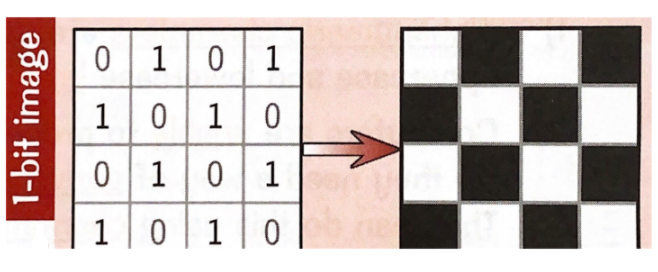
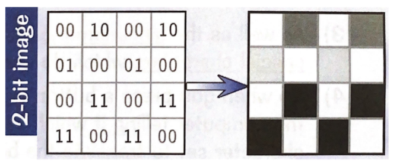
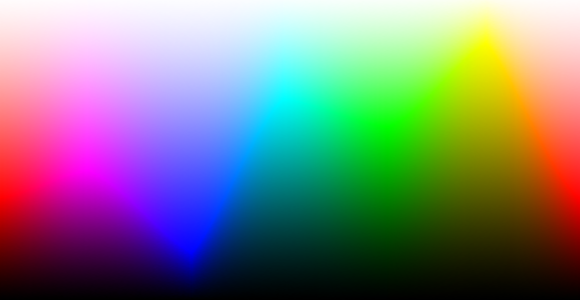

Description:
For example, a black and white image only uses 2 colours therefore, only needs 1 bit to represnt each pixel.
For Example:
Images with 4 colours for example, will have 2 bits per pixel where each pixel can be one of 4 values:
For Example:
You can increase the range of colours and shades by increasing the number of bits per pixel.
Colour Depth:
Total number of colours = 2^n Where n = number of bits per pixel.
24-bit colour depth:
Image Resolution:
File size = Image reolution (width X height) X Colour Depth.